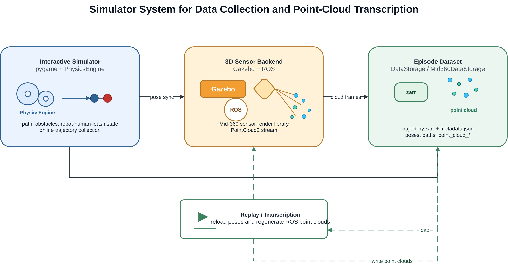

My Quarto Note
Human-Safe Diffusion Planning and Interaction-Aware Compliance Control for Guide Robots
Abstract
导盲机器人需要在复杂环境中安全地引导人类到达目标位置。与普通移动机器人导航不同，导盲机器人不仅需要避免机器人自身碰撞，还需要显式考虑被引导人的身体安全、运动舒适性以及人机物理交互中的主动性变化。现有 diffusion policy 可以从示范数据中学习平滑的运动策略，SafeDiffuser 类方法也可以通过 QP 或 safety projection 对动作进行安全修正。然而，现有方法通常主要关注机器人自身安全，缺少对人体碰撞风险的显式建模。
此外，传统 delay harness model 通常假设机器人先执行动作，然后人类根据牵引方向和绳长约束被动随动。这种模型适合描述简单的被动跟随场景，但无法表达真实交互中人类主动避障、迟疑、抵抗或短时主导运动的情况。为此，本文提出一种面向导盲机器人的 human-safe diffusion planning and interaction-aware compliance control 框架。该方法首先在 SafeDiffuser 风格的 QP projection 中加入 human collision constraint，使规划器同时考虑机器人安全和人体安全。其次，本文在 delay harness model 基础上引入 active human motion model，并估计人类主动性系数。进一步，本文使用 HMM 根据轨迹和交互特征识别当前状态是 robot-leading、human-leading 还是 uncertain。最后，本文提出 interaction-aware compliance control，仅在 HMM 识别为 human-leading 时启用 compliance control，从而在顺应人类意图的同时避免全程顺应导致的效率下降。仿真和真实实验验证了本文方法在人体安全、交互适应性和任务效率方面的优势。
Keywards
guide robot，diffusion policy，safe planning，human-robot interaction，compliance control，human motion modeling，hidden Markov model。
I. Introduction
A. Background and Motivation
导盲机器人需要通过物理牵引、空间引导或共享控制的方式帮助人类完成导航任务。在 leash-based 或 harness-based guide robot 系统中，机器人与人之间存在物理耦合关系，因此机器人的动作会直接影响人的运动。
与普通移动机器人不同，导盲机器人需要同时考虑以下因素：
- 机器人自身安全；
- 被引导人的身体安全；
- 人机牵引约束；
- 人类运动舒适性；
- 人类主动意图；
- 导航任务效率。
一个对机器人安全的轨迹不一定对人安全。例如，机器人绕过障碍物时自身可能不会发生碰撞，但由于人类存在运动滞后、身体宽度、侧向偏移或绳索牵引方向变化，人可能被拉向障碍物。因此，导盲机器人规划不能只考虑 robot collision，还应显式考虑 human collision。
同时，被引导人并不总是完全被动的。人在真实交互中可能会主动避障、减速、停顿、抵抗机器人牵引，或者短时间内主导运动方向。因此，导盲机器人控制应被建模为一个动态人机交互问题，而不是简单的机器人路径跟踪问题。
B. Limitations of Existing Methods
现有方法主要存在以下不足。
第一，diffusion policy 能够从示范数据中学习平滑、复杂的动作分布，但原始 diffusion policy 缺少显式安全约束，无法保证生成动作一定满足安全要求。
第二，SafeDiffuser 类方法通过 safety projection 或 QP-based correction 对 diffusion action 进行修正，但大多主要关注机器人自身与障碍物之间的安全距离，较少显式建模被引导人的身体碰撞风险。
第三，delay harness model 通常假设机器人先运动，人类随后根据牵引约束被动更新位置。这种模型适合描述人被机器人带动的情况，但无法表达真实人类的主动运动。
第四，compliance control 可以提高人机交互舒适性，使机器人顺应人类意图。然而，如果全程启用 compliance control，机器人可能过度让步，导致路径变长、速度下降和任务效率降低。
C. Contributions
本文主要贡献如下。
Human-safe diffusion planning. 本文在 SafeDiffuser-style constrained diffusion planning 中加入 human collision constraint，并通过 QP-based action projection 同时保证机器人安全和人体安全。
Active-passive interaction modeling. 本文在 delay harness model 基础上引入 stochastic human active motion，将人的运动表示为主动运动和被动随动运动的加权组合，并估计 human activeness coefficient。
HMM-based interaction state recognition. 本文使用 hidden Markov model 根据时间序列交互特征识别当前状态，包括 robot-leading、human-leading 和 uncertain。
Interaction-aware compliance control. 本文提出 HMM-triggered compliance controller，仅在 human-leading 状态下启用 compliance control，从而避免 full-time compliance 带来的效率下降。
D. Paper Organization
本文其余部分组织如下。Section II 回顾相关工作。Section III 给出问题定义。Section IV 介绍本文方法。Section V 介绍仿真实验。Section VI 介绍真实机器人实验。Section VII 讨论方法优势与局限。Section VIII 总结全文。
III. Problem Formulation
A. System Model
本文考虑一个机器人和一个人通过 leash 或 harness 相连，并在包含静态障碍物的二维环境中运动。
系统状态定义为：
\[ \mathbf{x}*t = [ \mathbf{p}*{r,t}, \theta_{r,t}, \mathbf{v}*{r,t}, \mathbf{p}*{h,t}, \mathbf{v}_{h,t}, \mathbf{l}_t, d_t ] \]
其中，\(\mathbf{p}{r,t}\) 表示机器人位置，\(\theta{r,t}\) 表示机器人朝向，\(\mathbf{v}{r,t}\) 表示机器人速度，\(\mathbf{p}{h,t}\) 表示人类位置，\(\mathbf{v}_{h,t}\) 表示人类速度，\(\mathbf{l}_t\) 表示牵引方向，\(d_t\) 表示机器人和人之间的距离。
机器人动作定义为：
\[ \mathbf{a}_t = [ v_t, \omega_t ] \]
其中，\(v_t\) 表示线速度指令，\(\omega_t\) 表示角速度指令。
B. Planning Objective
规划目标是生成机器人动作序列：
$$ _{0:T} ================
{ _0, _1, …, _T } $$
使人机系统安全、高效地到达目标位置。
该目标包括：
- 到达目标点；
- 避免机器人碰撞；
- 避免人体碰撞；
- 满足 leash 或 harness 约束；
- 保持轨迹平滑；
- 在必要时顺应人类意图；
- 避免不必要的 compliance。
C. Robot Safety Constraint
机器人需要与障碍物保持安全距离：
\[ d(\mathbf{p}_{r,t}, \mathcal{O}) \geq d_r^{safe} \]
其中，\(\mathcal{O}\) 表示障碍物集合，\(d_r^{safe}\) 表示机器人安全距离。
D. Human Safety Constraint
被引导人也需要与障碍物保持安全距离：
\[ d(\mathbf{p}_{h,t}, \mathcal{O}) \geq d_h^{safe} \]
其中，\(d_h^{safe}\) 表示人体安全距离。
这一约束非常关键，因为人体轨迹可能由于运动滞后、身体宽度、绳索方向和人机距离等因素与机器人轨迹不同。
E. Leash or Harness Constraint
机器人和人之间的距离应保持在合理范围内：
$$ d_{min} | _{r,t} —————-
{h,t} | d{max} $$
其中，\(d_{min}\) 和 \(d_{max}\) 分别表示最小和最大可行牵引距离。
F. Interaction States
本文将交互状态定义为隐变量：
\[ z_t \in { \text{Robot-leading}, \text{Human-leading}, \text{Uncertain} } \]
其中：
Robot-leading 表示机器人主要决定运动方向，人类主要被动跟随。
Human-leading 表示人类主动影响运动方向或速度，机器人应顺应人类意图。
Uncertain 表示交互状态处于同步、冲突、过渡或观测不明确状态。
IV. Proposed Method
A. Framework Overview
本文方法包含四个主要模块：
- diffusion policy 生成候选动作；
- human-safe QP projection 修正动作；
- active-passive human interaction model 预测人类运动；
- HMM-based interaction recognition 判断交互状态，并触发 interaction-aware compliance control。
整体流程为：
Observation → Diffusion Policy → Human-Safe QP Projection → Active-Passive Human Motion Model → HMM Interaction Recognition → Interaction-Aware Compliance Control → Robot Execution
B. Diffusion Policy Baseline
给定当前观测 \(\mathbf{o}_t\)，diffusion policy 生成候选机器人动作：
\[ \mathbf{a}*t^{diff} \sim \pi*\theta ( \mathbf{a}_t \mid \mathbf{o}_t ) \]
观测可以包含：
\[ \mathbf{o}_t = [ \mathbf{x}_t, \mathbf{g}, \mathcal{O}, \mathbf{h}_t ] \]
其中，\(\mathbf{x}_t\) 表示人机系统状态，\(\mathbf{g}\) 表示目标位置，\(\mathcal{O}\) 表示障碍物信息，\(\mathbf{h}_t\) 表示历史观测。
Diffusion policy 能够生成平滑且接近示范数据分布的动作，但其输出动作可能违反机器人安全、人体安全或牵引约束。
C. Human-Safe QP Projection
为了保证安全，本文使用 QP-based safety layer 将 diffusion action 投影到可行安全动作空间中：
$$ _t^* ==============
_{} | ———-
_t^{diff} |^2 $$
约束条件为：
\[ d(\hat{\mathbf{p}}_{r,t+1}, \mathcal{O}) \geq d_r^{safe} \]
\[ d(\hat{\mathbf{p}}_{h,t+1}, \mathcal{O}) \geq d_h^{safe} \]
$$ d_{min} | _{r,t+1} ————————
{h,t+1} | d{max} $$
其中，\(\hat{\mathbf{p}}*{r,t+1}\) 和 \(\hat{\mathbf{p}}*{h,t+1}\) 分别表示执行动作 \(\mathbf{a}\) 后预测得到的机器人和人类下一时刻位置。
第一个约束保证机器人安全。第二个约束是本文提出的 human collision constraint，用于显式保证人体安全。第三个约束保证 leash 或 harness 关系保持合理。
D. Delay Harness Baseline
Delay harness model 假设机器人先执行动作，然后人类根据牵引方向和绳长约束被动移动。
被动人类运动可以写为：
$$ _{h,t}^{passive} ==========================
f_{harness} ( {r,t}, {h,t}, _{r,t}, d_t ) $$
其中，\(\mathbf{u}_{h,t}^{passive}\) 表示由机器人运动和牵引约束诱导的人类被动运动。
该模型简单、可解释，适合仿真中的被动随动场景，但它默认人类只是被动跟随者，无法表达主动避障、迟疑、抵抗或 human-leading 行为。
E. Active-Passive Human Motion Model
为了建模人类主动性，本文引入 human active motion：
\[ \mathbf{u}_{h,t}^{active} \]
该主动运动可以表示：
- 人类随机步态扰动；
- 局部避障行为；
- 迟疑或减速；
- 对机器人牵引的抵抗；
- 短时 human-leading 方向；
- 人类偏好的运动方向。
最终的人类运动建模为主动运动和被动运动的混合：
$$ _{h,t} ================
k_t {h,t}^{active} + (1-k_t) {h,t}^{passive} $$
其中，\(k_t\) 是 human activeness coefficient。
当 \(k_t = 0\) 时，表示人类完全被动随动。
当 \(k_t = 1\) 时，表示人类完全主动运动。
当 \(0 < k_t < 1\) 时，表示人类运动由主动意图和被动牵引共同决定。
F. Human Activeness Estimation
给定观测到的人类运动 \(\mathbf{u}_{h,t}^{obs}\)，可以通过最小化预测误差估计 \(k_t\)：
$$ k_t^* =====
{k_t} | {h,t}^{obs} ———————-
|^2 $$
估计得到的 \(k_t^*\) 可以作为 HMM 的输入特征之一。
较大的 \(k_t^*\) 表示当前人类主动性更强；较小的 \(k_t^*\) 表示当前人类更接近被动跟随。
G. HMM-Based Interaction Recognition
交互状态被建模为隐变量：
\[ z_t \in { \text{Robot-leading}, \text{Human-leading}, \text{Uncertain} } \]
HMM 的观测特征定义为：
\[ \mathbf{y}_t = [ s_t^{lead}, s_t^{extension}, v_t^{shared}, \Delta\theta_t, k_t ] \]
其中，\(s_t^{lead}\) 表示 robot lead score，\(s_t^{extension}\) 表示 link extension score，\(v_t^{shared}\) 表示 shared speed，\(\Delta\theta_t\) 表示机器人和人类速度方向差，\(k_t\) 表示估计得到的人类主动性系数。
HMM 联合概率为：
$$ p(z_{1:T}, _{1:T}) ============================
p(z_1) {t=2}^{T} p(z_t z{t-1}) _{t=1}^{T} p(_t z_t) $$
通过 Viterbi 解码得到最可能的状态序列：
$$ z_{1:T}^* =========
{z{1:T}} p(z_{1:T} _{1:T}) $$
相比逐帧分类，HMM 可以利用时间连续性，减少状态识别抖动，提高 interaction state recognition 的稳定性。
H. Interaction-Aware Compliance Control
Full-time compliance control 在每个时刻都启用顺应控制：
$$ _t ============
_t^{plan} + _t^{comp} $$
其中，\(\mathbf{a}_t^{plan}\) 表示规划动作，\(\mathbf{a}_t^{comp}\) 表示顺应控制修正项。
虽然 full-time compliance 可以提高舒适性，但它可能使机器人持续受到人类随机扰动影响，导致导航效率下降。
因此，本文提出 interaction-aware compliance control：
$$ _t = \[\begin{cases} \mathbf{a}_t^{plan} + \mathbf{a}_t^{comp}, & z_t === \text{Human-leading} \ \mathbf{a}_t^{plan}, & z_t === \text{Robot-leading} \ \mathbf{a}_t^{plan} + \lambda \mathbf{a}_t^{comp}, & z_t === \text{Uncertain} \end{cases}\text{Uncertain}\]\end{cases} $$
其中，\(0 < \lambda < 1\) 表示 uncertain 状态下的部分顺应强度。
该设计使机器人只在 human-leading 状态下充分顺应人类意图，在 robot-leading 状态下保持高效引导，在 uncertain 状态下采用保守的部分顺应策略。
I. Algorithm Summary
Algorithm 1: Human-Safe Diffusion Planning with Interaction-Aware Compliance
输入：当前观测 \(\mathbf{o}_t\)、机器人状态、人类状态、障碍物地图、训练好的 diffusion policy 和 HMM model。
输出：最终机器人动作 \(\mathbf{a}_t\)。
- 从 diffusion policy 采样候选动作 \(\mathbf{a}_t^{diff}\)。
- 预测机器人下一时刻位置 \(\hat{\mathbf{p}}_{r,t+1}\)。
- 使用 interaction model 预测人类下一时刻位置 \(\hat{\mathbf{p}}_{h,t+1}\)。
- 求解 human-safe QP projection，得到 \(\mathbf{a}_t^*\)。
- 估计 human activeness coefficient \(k_t\)。
- 提取 HMM 观测特征 \(\mathbf{y}_t\)。
- 使用 HMM 推断 interaction state \(z_t\)。
- 根据 \(z_t\) 启用对应的 compliance control。
- 执行最终机器人动作 \(\mathbf{a}_t\)。
V. Simulation Experiments
A. Simulation Setup
仿真实验包含多种导盲机器人导航场景：
- 直线走廊引导；
- 窄通道通过；
- 障碍物绕行；
- 急转弯；
- 人类迟疑；
- 人类主动偏移；
- 人类抵抗；
- 短时 human-leading 行为。
数据采集与点云生成流程如 Figure 1 所示。pygame 负责交互与可视化，PhysicsEngine 更新人机状态；可选 Mid-360 后端将状态同步到 Gazebo，经 sensor render library 和 ROS PointCloud2 生成点云，并与轨迹一起写入 episode。回放阶段可重放已有 episode，批量补生成点云。

仿真系统包含：
- 机器人动力学模型；
- 人类运动模型；
- leash 或 harness 约束；
- 障碍物地图；
- 目标点；
- active-passive human motion model。
B. Compared Methods
实验对比以下方法：
Diffusion Policy 原始 diffusion policy，不包含显式 safety projection。
SafeDiffuser 加入机器人自身安全约束的 diffusion planner。
Delay Harness 使用纯被动人类随动模型，不包含主动人类运动。
Full-Time Compliance 全程启用 compliance control。
Ours without Human Collision Constraint 去掉 human collision constraint 的消融版本。
Ours without HMM-Triggered Compliance 去掉 HMM-triggered compliance 的消融版本。
Ours Full System 本文完整方法。
C. Evaluation Metrics
1) Safety Metrics
- robot collision rate；
- human collision rate；
- minimum robot-obstacle distance；
- minimum human-obstacle distance；
- leash constraint violation rate。
2) Efficiency Metrics
- task success rate；
- time to goal；
- path length；
- trajectory smoothness。
3) Interaction Metrics
- human-leading recognition accuracy；
- robot-leading recognition accuracy；
- HMM state switching consistency；
- compliance activation ratio；
- human activeness estimation error。
4) Comfort Metrics
- acceleration；
- jerk；
- leash tension variation；
- sudden heading change；
- human velocity deviation。
D. Experiment 1: Ablation of Human-Safe Constraints
该实验用于验证 human collision constraint 是否能够提升人体安全性。
对比方法包括：
- Diffusion Policy；
- SafeDiffuser；
- SafeDiffuser with Human Collision Constraint。
主要评价指标包括：
- human collision rate；
- minimum human-obstacle distance；
- success rate；
- path length increase。
预期结论是，加入 human collision constraint 后，人体碰撞风险显著降低，同时任务成功率不会明显下降。
E. Experiment 2: Comparison with SafeDiffuser
该实验用于比较本文 human-safe diffusion planner 和原始 SafeDiffuser。
代表性场景包括：
- 机器人能够安全通过，但人可能碰撞；
- 窄通道；
- 急转弯；
- 人体侧向偏移；
- 人类响应延迟。
预期结论是，SafeDiffuser 可以避免机器人自身碰撞，但仍可能生成对人不安全的轨迹。本文方法通过显式建模 human collision constraint 提升人体安全性。
F. Experiment 3: Ablation of Active-Passive Interaction Model
该实验用于验证 active-passive human motion model 和 \(k_t\) 估计的作用。
对比方法包括：
- Delay Harness；
- Delay Harness with Random Active Motion；
- Active-Passive Model without \(k_t\) Estimation；
- Active-Passive Model with \(k_t\) Estimation。
主要评价指标包括：
- human trajectory prediction error；
- human velocity prediction error；
- interaction state consistency；
- downstream planning success rate。
预期结论是，相比纯 delay harness model，active-passive interaction model 能更好地描述真实人类运动。
G. Experiment 4: HMM-Based Interaction Recognition
该实验用于评估 HMM 对 robot-leading、human-leading 和 uncertain 状态的识别能力。
对比方法包括：
- rule-based classifier；
- frame-wise classifier；
- HMM without \(k_t\)；
- HMM with \(k_t\)。
主要评价指标包括：
- state recognition accuracy；
- temporal consistency；
- false human-leading activation；
- false robot-leading activation；
- transition delay。
预期结论是，HMM-based recognition 能够减少逐帧状态跳变，提高交互状态识别稳定性。
H. Experiment 5: Interaction-Aware Compliance Control
该实验用于验证 HMM-triggered compliance 是否优于 full-time compliance。
对比方法包括：
- No Compliance；
- Full-Time Compliance；
- HMM-Triggered Compliance。
主要评价指标包括：
- success rate；
- time to goal；
- path length；
- compliance activation ratio；
- human intention following score；
- human collision rate。
预期结论是，HMM-triggered compliance 能够在必要时顺应人类意图，同时避免 full-time compliance 导致的效率损失。
I. Overall Simulation Results
综合对比方法包括：
- Diffusion Policy；
- SafeDiffuser；
- Human-Safe Diffuser；
- Full-Time Compliance；
- Ours Full System。
推荐结果表格如下：
| Method | Success ↑ | Human Collision ↓ | Robot Collision ↓ | Time ↓ | Path Length ↓ | Comfort ↑ |
|---|---|---|---|---|---|---|
| Diffusion Policy | ||||||
| SafeDiffuser | ||||||
| Human-Safe Diffuser | ||||||
| Full-Time Compliance | ||||||
| Ours Full System |
预期总体结论是，本文方法在 safety、efficiency 和 interaction quality 之间取得更好的平衡。
VI. Real-World Experiments
A. Hardware Platform
真实实验平台包括：
- 移动导盲机器人；
- leash 或 harness 牵引机构；
- onboard computing unit；
- 定位传感器；
- 障碍物感知传感器；
- 人体位置跟踪模块；
- 低层速度控制器。
系统在线运行本文提出的 planning and control framework。
B. Real-World Scenarios
真实实验包含以下场景：
- straight guidance；
- turning guidance；
- narrow passage crossing；
- obstacle avoidance；
- human active deviation；
- human hesitation or stopping；
- human-leading recovery。
C. Compared Methods
真实实验中建议重点比较以下方法：
- SafeDiffuser；
- Full-Time Compliance；
- Ours Full System。
D. Evaluation Metrics
真实实验评价指标包括：
- task success rate；
- completion time；
- human near-collision count；
- robot near-collision count；
- compliance activation frequency；
- human intervention count；
- subjective comfort score；
- subjective safety score。
E. Real-World Results
真实实验需要展示以下结论：
- human-safe constraint 能减少人体 near-collision；
- HMM 能识别人类主动运动；
- 在 human-leading 状态下机器人能够顺应人类；
- 在 robot-leading 状态下机器人能够保持高效引导；
- 相比 full-time compliance，本文方法在保持舒适性的同时完成时间更短。
VII. Discussion
A. Effect of Human Collision Constraints
本节讨论为什么 robot-only safety 对导盲机器人是不够的。
即使机器人轨迹无碰撞，人类轨迹仍可能因为以下原因发生风险：
- 人类响应延迟；
- 人体宽度；
- 侧向偏移；
- 绳索牵引方向；
- 转弯几何关系；
- 人机距离变化。
因此，human collision constraint 是导盲机器人安全规划中的关键组成部分。
B. Effect of Human Activeness Modeling
Delay harness model 对 passive-following 场景有效，但无法表达 human active intention。
Active-passive model 能更好地表示：
- 人类主动避障；
- 人类迟疑；
- 短时抵抗；
- human-leading 行为；
- 人机共同决定的混合运动。
其中，\(k_t\) 提供了一个紧凑的人类主动性表征。
C. Why Interaction-Aware Compliance Is Better Than Full-Time Compliance
Full-time compliance 可以提高舒适性，但会降低任务效率。No compliance 可以保持效率，但可能忽略人类意图。
Interaction-aware compliance 在二者之间取得折中：
- human-leading 状态下顺应人类；
- robot-leading 状态下保持高效引导；
- uncertain 状态下部分顺应。
因此，该方法能够同时提高交互适应性和导航效率。
D. Limitations
本文方法仍存在以下局限。
第一，HMM 状态识别依赖轨迹和交互特征的质量。
第二，human active motion model 仍然较为简化，无法覆盖所有真实人类行为。
第三，\(k_t\) 的估计可能受到传感器噪声影响。
第四，真实实验的规模和参与者多样性可能有限。
第五，本文方法主要适用于 leash-based 或 harness-based guide robot。
VIII. Conclusion
本文提出了一种面向导盲机器人的 human-safe diffusion planning and interaction-aware compliance control framework。该方法首先在 SafeDiffuser-style QP projection 中加入 human collision constraint，从而显式考虑被引导人的身体安全。其次，本文在 delay harness model 基础上引入 active-passive human motion model，并估计 human activeness coefficient。进一步，本文使用 HMM 根据时间序列交互特征识别 robot-leading、human-leading 和 uncertain 状态。最后，本文提出 interaction-aware compliance controller，仅在 human-leading 状态下充分启用 compliance control。
仿真和真实实验表明，相比 diffusion policy、SafeDiffuser、delay harness model 和 full-time compliance control，本文方法能够更好地提升人体安全性，保持导航效率，并适应人类主动意图。